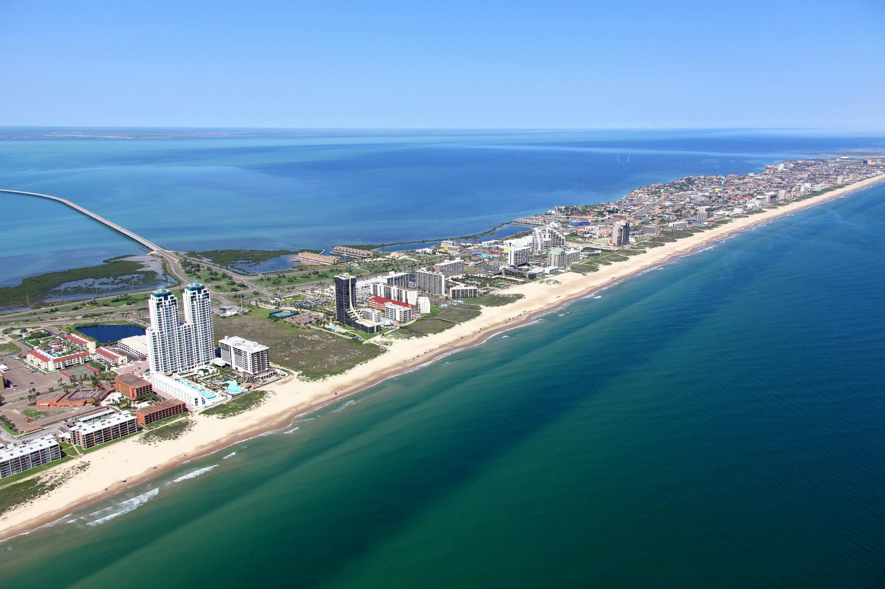
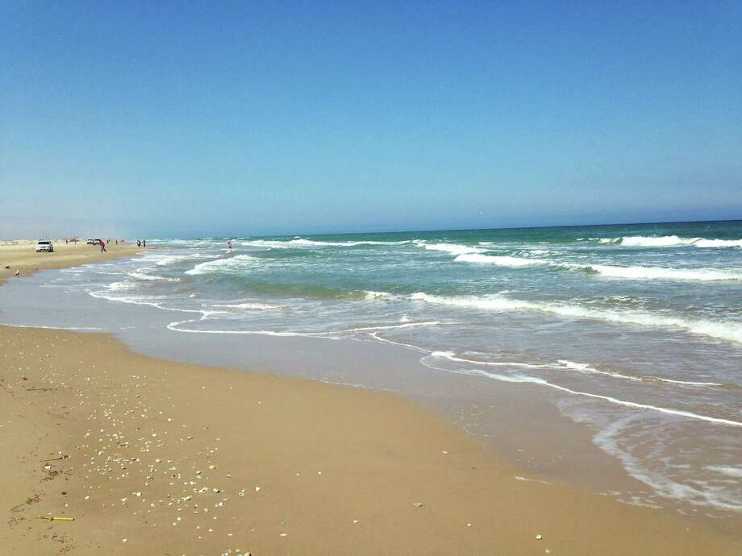

South Padre Island, Texas
For a Spring Break getaway, this beautiful island is a great place to go for its wonderful weather, water, sports, and nature. All kinds of outdoor activites and several items that can be rented so that you can enjoy your time in the water. Our recommendation on a place to stay is with the South Padre Resort Rentals as they provide amazing accommodations in a luxury beachfront condominiums. As for places to eat we only have one recommendation so far and that is Clayton's Beach Bar & Event Venue as they provide wonderful food and live music.
 